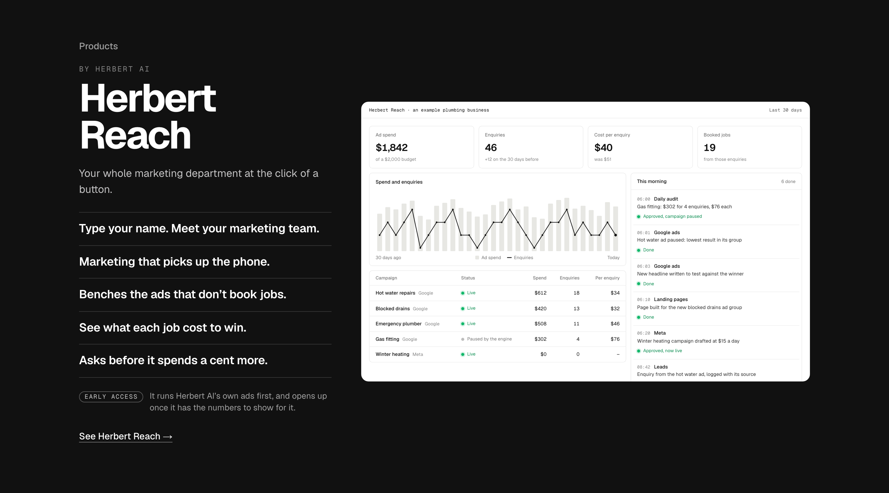
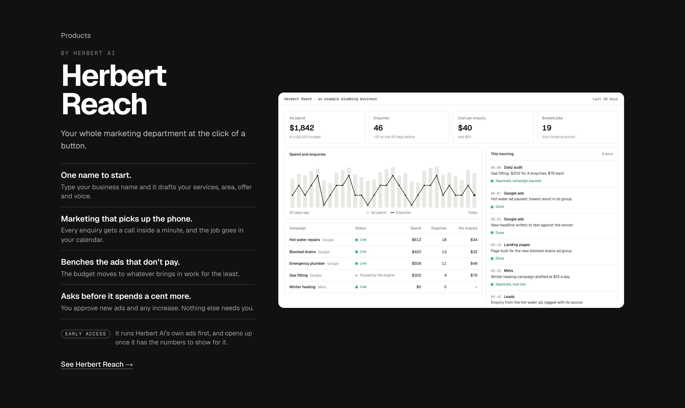
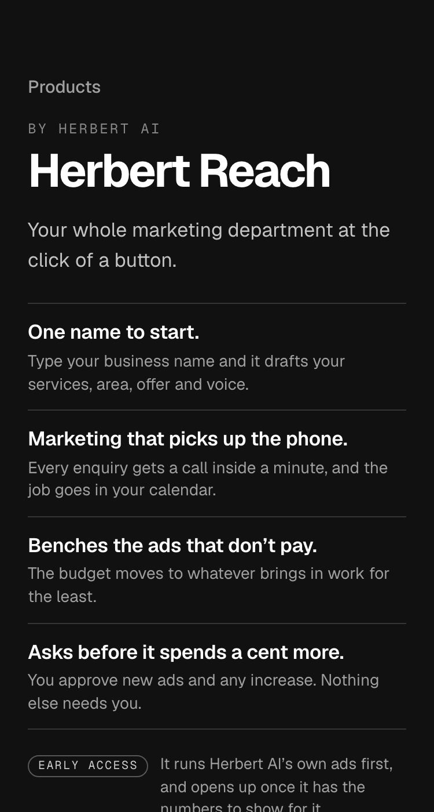
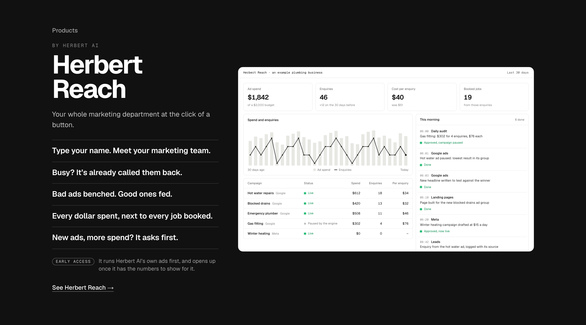
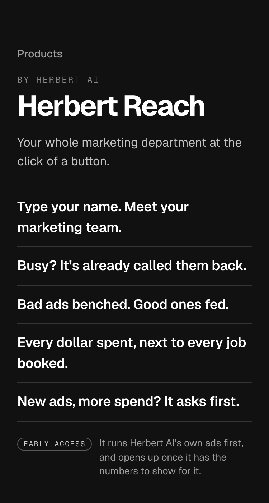

1. One-linersThe five best-scoring lines that each say a different thing, one device each, set bigger and white so each row reads as a line, not a fact. The dashboard beside them is the proof. Recommended.


Detail 2 of 6, round 3. Written by the catchy-copy method: about 35 lines drafted, the ones below scored, the best drawn as three lists on the band. Your line stays. Every list keeps the approval rule, names no ad platform (Meta is still waiting on app review) and promises no results.




